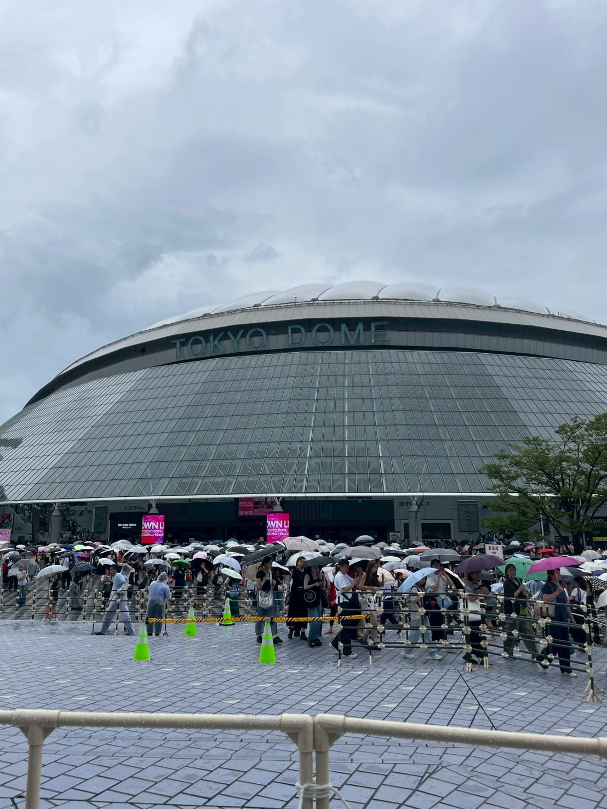
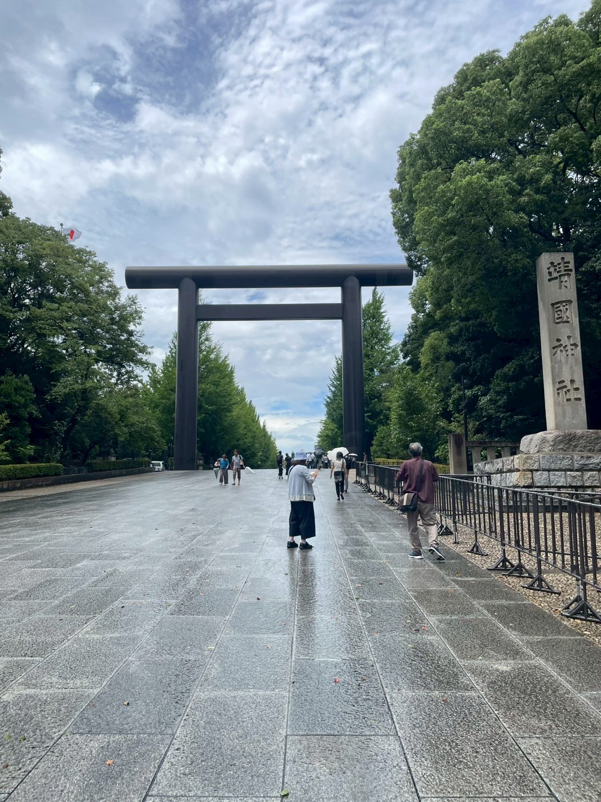
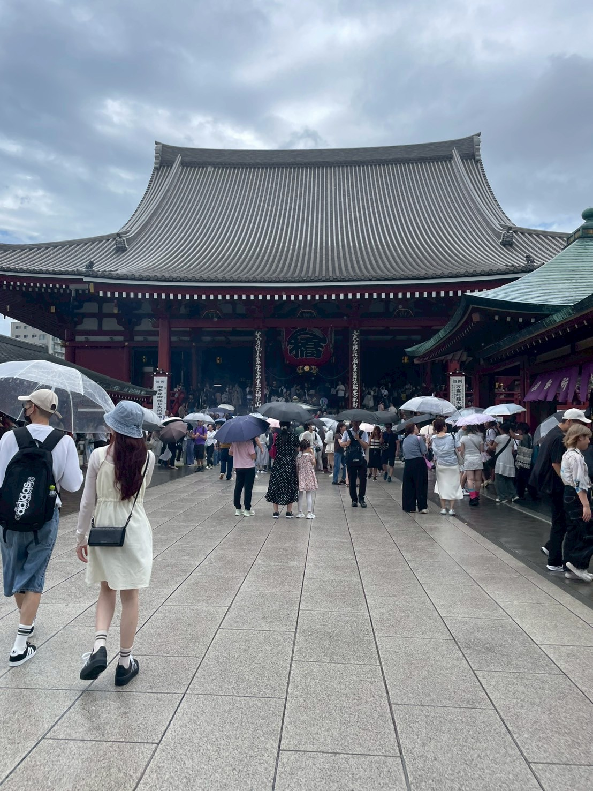

とりあえず東京に行ってみた
なかなか当たらないライブのチケットが当たったので東京に行ってきました。
ライブ以外の予定はなく「せっかくだから１泊する？」くらいの気持ちで東京に行ってきました。
雨が降ったり行き当たりばったりの1泊2日の東京観光を共有します。



なかなか当たらないライブのチケットが当たったので東京に行ってきました。
ライブ以外の予定はなく「せっかくだから１泊する？」くらいの気持ちで東京に行ってきました。
雨が降ったり行き当たりばったりの1泊2日の東京観光を共有します。